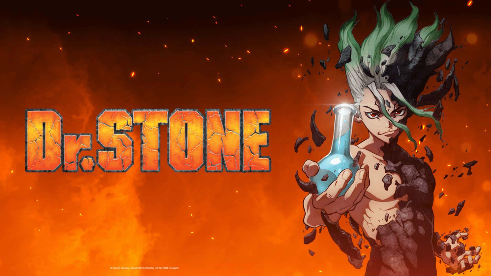

-
Naruto

O primeiro lugar não podia ser de de outro anime, porque já tem dono, e se chama Naruto. E são vários os motivos que deixam ele nessa posição, a contrução dos personagens, como o próprio Naruto, Sasuske, Itachi, Obito e vários outros. Também podemos considerar as lutas épicas que acontecem ao longo da trama, incluisive alguns embates históricos como Madara vs 5 Kages, Gaara vs Rock Lee, Naruto vs Sasuske, Madara vs Hashirama, Madara vs Aliança Ninja, Sasuske e Itachi vs Kabuto entre outras. E para finalizar esse comentário, não podia deixar de falar da organização mais perigosa do enredo, a Akatsuki; se você gosta de Naruto, com certeza já quis ser um ninja renegado.
A história de vida dos personagens mais marcantes da obra também faz a gente se conectar com cada um deles. Por esses e muitos outros motivos, o melhor anime do mundo ninja ocupa a primeira colocação.
-
Attack on Titan

O anime dos titãs, de Eren Jeager e companhia. Esse anime deixa você tenso e sempre com a expectativa nas alturas do começo até o final. Com cenas completamente assustadoras, uma história incrível, personagens muito queridos e embates épicos, esse anime ocupa o segundo lugar da minha lista, e que poderia muito bem ser o top 1 não fosse o desfecho final. Se você já assistiu esse anime e gostou assim como eu, deve ter tido o desejo de entrar para a Divisão de Reconhecimento. Mas se você ainda não viu, eu recomendo que veja.
-
Dr. Stone
Na terceira posição um dos animes mais divertidos que já assisti. Conta a história de um jovem cientista muito inteligente do ensino médio que vê o mundo inteiro se transformar em pedra. Milhões de ano depois, ele acorda com uma missão, trazer de volta a vida toda a civilização humana.
Com base nos seus conhecimentos sobre ciência, Senku Ishigame vai tentar resconstruir toda a tecnologia já desenvolvida pela humanidade no novo mundo de pedra.
Nesse anime você vai se divertir bastante com as aventuras de Senku e sua tripulação, com as batalhas, as conquistas, as grandes invenções e busca para solucionar o grande mistério da petrificação.
-
Fullmetal Alchemist Brotherhood

Fullmetal é uma anime que conta a história de dois irmãos que fizeram um pacto para trazer a mãe de volta a vida; porém, esse plano não deu muito certo. Os garotos ultrapassaram as leis da alquimia, e um dos irmãos foi obrigado a fazer um sacrifício, ele teve que trocar o seu corpo para tornar possível o desejo de ver a mãe novamente; desde então, Alfonse passou a ter somente uma alma dentro de uma armadura.
Porém, no final, eles descobriram que nada disso era possível, então; Eduard, o outro irmão começa uma busca imparável para tentar trazer o corpo do seu irmão Alfonse de volta.
-
Kimetsu no Yaiba

Demon Slayer é um anime que conta a história de Tanjiro Kamado, o protagonista que teve sua família exterminada por um demônio, e só restou a sua irmã. A partir de então, Tanjiro começa sua jornada para tentar se tornar o
-
Hunter x Hunter

-
Spy x Family

-
One Punch Man